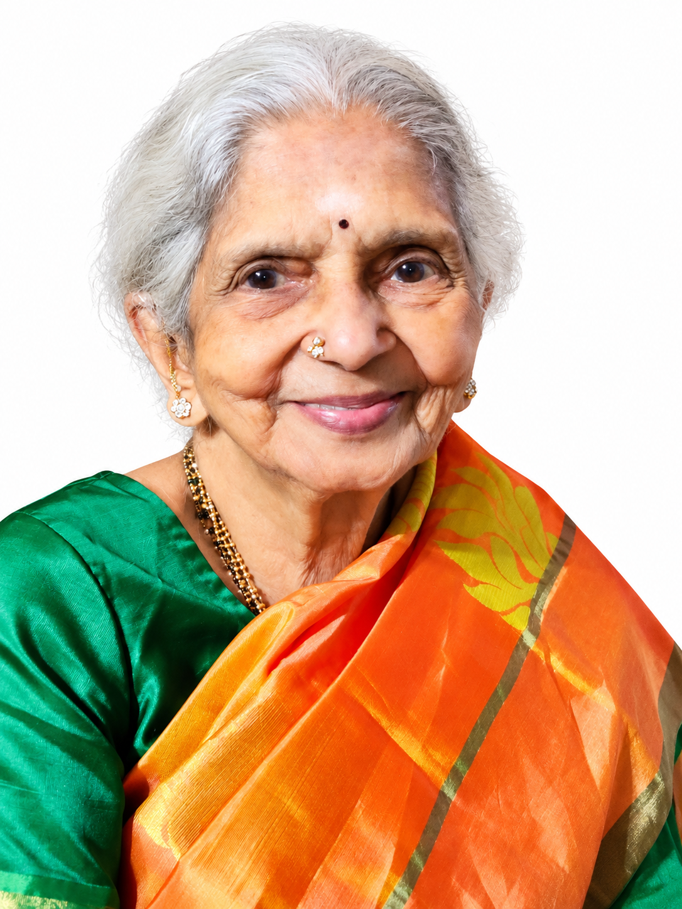

About Us
SaraDharma is being created with a simple purpose: to build a caring residential wellness community where older adults can experience dignity, companionship, holistic well-being and a meaningful sense of belonging.
Dharma Rajan
Dharma Rajan M.Tech, M.S, PhD
Rajan started his career as a Space Scientist at ISRO and has spent more than 30 years in the United States working with leading technology companies. He is also a former Advisor to the Government of India on Next Generation Technology.
Based on his personal experience and the challenges many NRIs face in taking care of their elderly parents, he is starting the SaraDharma community. SaraDharma is also a vision project of his mother to serve society.
He is hopeful of evolving the community where senior adults experience dignity, companionship and holistic well-being, with support from everyone.
Anantu Iyer Saraswathi
Anantu Iyer Saraswathi is the visionary behind SaraDharma. She is one of those rare gems who has devoted her life to serving others. Her principle in life, her smile and her will power have been a source of strength to all around her.
Her noble service includes multiple instances in which families have sought her spiritual support during critical illness, including severe jaundice. These experiences have been described by the families concerned as part of their loved ones' recovery.

Anantu Iyer Saraswathi
SaraDharma brings together a personal journey, a family vision and a commitment to creating a caring community for older adults.